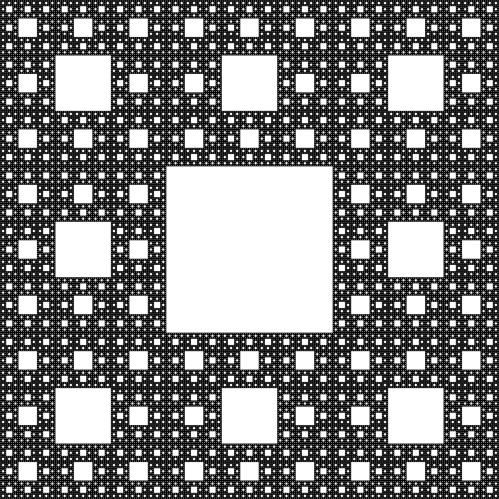

Ciąg Fibonacciego to ciąg liczb naturalnych, z których każda kolejna liczba jest określona rekurencyjnie, czyli jest zależna od poprzednich. Pierwsza liczba ciągu to F0 = 0, a druga F1 = 1, z kolei każda kolejna jest sumą dwóch poprzednich:
F2 = 0+1 = 1
F3 = 1+1 = 2
F4 = 2+1 = 3
F5 = 3+2 = 5
F6 = 5+3 = 8
F7 = 8+5 = 13
F8 = 8+13 = 21
F9 = 13+21 = 34
…
Najciekawsze jest to, że ciąg Fibonacciego ma ogromny związek ze złotą liczbą. Złota liczba oznacza podział odcinka na dwie części w bardzo specyficzny sposób: stosunek długości dłuższego odcinka do krótszego musi być równy stosunkowi całego odcinka do dłuższego odcinka.
Jest to tak zwany złoty podział i określany jest przez tzw. złotą liczbę oznaczaną gracką literę φ (czyt. „fi”), której wartość wynosi 1,61803398875... Dzieląc kolejne liczby ze złotego ciągu przez poprzednią otrzymamy liczby coraz bliższe złotej liczbie.
Możemy również skonstruować złoty kąt, czyli kąt środkowy oparty na mniejszym z dwóch łuków powstałych w wyniku złotego podziału okręgu. Jego miara w przybliżeniu wynosi 137,5 stopnia.
Zastosowanie
Ciąg Fibonacciego oraz złota liczba pojawią się w przyrodzie, kosmosie, anatomii ludzkiego ciała, architekturze, inżynierii, sztuce, muzyce czy fizyce. Ruchy fal, huragany, skorupy ślimaków i małż, rogi muflonów, płatki roślin, galaktyki spiralne, a u wielu roślin w kolejnych latach na poszczególnych poziomach ich wzrostu liczba odgałęzień oraz liczba liści są odzwierciedleniem liczb Fibonacciego.
Jak się jednak okazuje owo „odkrycie” ciągu oznaczało jedynie wprowadzenie tego pojęcia do europejskiej matematyki nowożytnej. Istnieją bowiem pisma indyjskie zapisanie w sanskrycie pochodzące z III i II wieku p.n.e., które potwierdzają fakt, że ciąg Fibonacciego był już wówczas znany. Samą zasadę złotej proporcji znali starożytni Egipcjanie, opierając na niej budowę piramid. Także starożytni Grecy tworzyli swoje świątynie z prostokątów, które zbudowane są w oparciu o złoty podział np. Partenon. Liczby Fibonacciego i złotą proporcję wykorzystywali w architekturze.To właśnie dzięki złotej proporcji budowle te mają być odbierane jako harmonijne i doskonałe w swojej formie. Sam Leonardo da Vinci wykorzystywał złotą proporcję do tworzenia swoich obrazów. Ze złotej proporcji czerpali także najwięksi kompozytorzy muzyki klasycznej — kolejne nuty były zapisywane jako kolejne liczby ciągu Fibonacciego, dzięki czemu powstały najbardziej znane harmonijne utwory.
Ciąg Fibonacciego i złoty podział wykorzystuje się także w projektach współczesnego świata. Szczególnie upodobali je sobie projektanci i graficy komputerowi, dlatego że właśnie projekty zbudowane w oparciu o nie najbardziej przypadają do gustu klientom. N podstawie proporcji złotego podziału zostały zaprojektowane wszystkie karty bankomatowe, prawo jazdy czy dowód osobisty. Z ciągu Fibonacciego korzystają także największe firmy, które złoty podział mają zawarty w swoim logo: Toyota, BP, PZU, Pepsi czy National Geographic. Złoty podział i liczby Fibonacciego wykorzystane są w projektach stron internetowych czy samochodów osobowych. Ciąg Fibonacciego w pełni docenił światowy gigant, jakim jest Apple, tworząc urządzenia elektroniczne oraz swoje logo, które uchodzą za wyjątkowo estetyczne i harmonijne dzięki temu, że oparte zostały o złoty podział.
Co to jest fraktal?
Fraktal, według definicji encyklopedycznej to obiekt, dla
którego wymiar fraktalny (Hausdorffa-Besicovitcha) jest większy
od wymiaru topologicznego.
Według definicji „potocznej” fraktal jest obiektem
samopodobnym – tzn. takim, którego części są podobne do całości
– lub „nieskończenie subtelny” czyli taki, który ukazuje subtelne
detale nawet w wielokrotnym powiększeniu danego obrazu.

Dywan Sierpińskiego
Wymiar fraktalny:
Cały dywan jest do siebie podobny w skali 3,
powtarza się 8 razy:
d=log8/log3=1,8928
Krok 1. Kwadrat dzielimy na 9 części i
usuwamy środkową część.
Krok 2.Postepujemy kolejno tak samo z
kolejnymi kwadratami.
Płatek Kocha
Krok 0 :Krzywa Kocha jest odcinkiem. Zostanie on podzielony na 3 równe części, a środkową zastąpią dwa odcinki długości
1/3l,nachylone względem niej pod kątem 60°.
Krok 1: krzywa po transformacji zawiera 4 odcinki, każdy równy
1/3l. W kolejnym kroku każdy z tych odcinków ponownie zostanie podzielony na 3 części, a środkową znów zastąpimy dwoma odcinkami.
Krok 2: Krzywa Kocha zawiera już 16 odcinków, każdy długości
1/9l. W kolejnym kroku powstanie 64 odcinków, każdy długości 1/27l itd.